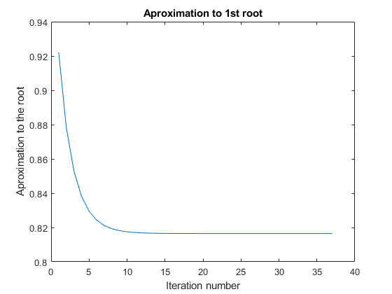
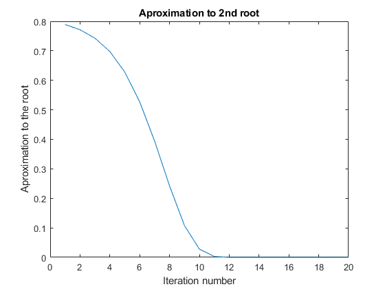

Contents
first root
clear all;
fx = generateFx('Serhat', 'Aydogdu');
gx = @(x) ((2/3 * x.^3)^(1/5));
x0 = 1;
maxIter = 10000;
tolX = 1e-9;
x = x0;
xold = x0;
xp = zeros(1,37);
for i = 1:maxIter
x = gx(x);
err = abs(x - xold);
xp(i) = xold;
xold = x;
if (err < tolX)
break;
end
xp(i) = xold;
end
figure(1)
grid on;
plot(1:37, xp)
title('Aproximation to 1st root')
xlabel('Iteration number')
ylabel('Aproximation to the root')

second root
gx2 = @(x) (3/2*x^5)^(1/3);
x0 = 0.8;
maxIter = 100;
tolX2 = 1e-100;
x2 = x0;
xold2 = x0;
xp2 = [];
for i = 1:maxIter
x2 = gx2(x2);
err = abs(x2 - xold2);
xold2 = x2;
xp2(i) = x2;
if (err < tolX2)
break;
end
end
figure(2)
grid on;
plot(1:20, xp2)
title('Aproximation to 2nd root')
xlabel('Iteration number')
ylabel('Aproximation to the root')
